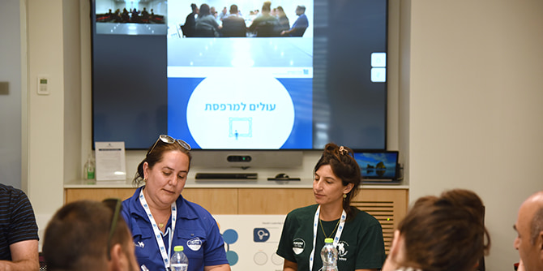

צוות תוכנית מנדל למנהיגות נוער היה עד לאתגרים המורכבים שבפניהם עמדו ארגוני החינוך הבלתי פורמלי בזמן משבר הקורונה, ולנזק שגרם המשבר לילדים ולבני נוער בשל הריחוק החברתי שנכפה עליהם. עם זאת, המשבר יצר גם הזדמנות: ההיענות לצרכים של בני הנוער ורצונם בקירוב מחודש עשויים לשמש מנוף שיחבר אותם לפעילויות החינוך הבלתי פורמלי ויגדיל את מספר המשתתפים בהן.

במכון מנדל למנהיגות הוחלט אפוא ליזום מהלך משותף לשם יצירת חיבור בין נציגים של הרשויות המקומיות ביחידות הנוער ובין ארגוני נוער הפועלים בתחום החינוך הבלתי פורמלי, כדי לאפשר להם ללמוד יחד על הנעשה בתחום בארץ ובעולם ולהפיק תובנות משותפות שיחזקו את כוחו והשפעתו של מערך החינוך הבלתי פורמלי במדינת ישראל.
במסגרת היוזמה התקיים בחודש יוני 2021 במכון מנדל למנהיגות יום חשיבה שבו השתתפו נציגי מחלקות הנוער ברשויות שנבחרו מראש, לצד מנהלים ומנהלות בארגוני ילדים ונוער ארציים. התהליך התמקד בחקירה של מקרי בוחן משלוש רשויות: דליית אל-כרמל, אשדוד ובת ים. המפגש כלל למידה משותפת, הבנת האתגרים ופיתוח כיווני פעולה אפשריים להתמודדות מיטבית עם האתגרים שלפתחן.
המהלך הוא חלק מהתפיסה הרואה בחינוך הבלתי פורמלי אקוסיסטם שיש לחבר את חלקיו לכדי תמונה מלאה – תפיסה שתוכנית מנדל למנהיגות נוער מקדמת כחלק ממטרותיה: בניית קהילה של מנהיגות ומנהיגים מגוונים הצומחים משדה החינוך הבלתי פורמלי ופועלים יחד ולחוד לחיזוק החינוך הערכי, הסולידריות החברתית ושוויון ההזדמנויות; הגדלת השפעתו של החינוך הבלתי פורמלי; ומתן אפשרות לכל ילד בישראל להשתתף בפעילות חינוך איכותית המותאמת עבורו.
השותפים למהלך הם גופי שטח כלל-ארציים הפועלים בתחום החינוך הבלתי פורמלי: מועצת ארגוני הילדים והנוער - ארגון גג המאגד 20 ארגוני ילדים ונוער האמונים על יותר מ-150 אלף חניכים וחניכות ויותר מ-1,000 מתנדבי שנות שירות, ואיגוד מנהלי מחלקות הנוער בישראל – איגוד מקצועי הכולל 256 ראשי מחלקות נוער ברשויות המקומיות ועשרות אלפי עובדי נוער האמונים על נושא החינוך הבלתי פורמלי.

בשנים האחרונות מתחזק מעמדן של הרשויות המקומיות כמוסד השלטוני הקרוב ביותר לאזרחים. הרשויות המקומיות מסייעות במימוש זכויות חברתיות וכלכליות של אזרחים ומספקות להם מערך שירותים הכרחי. חקיקת חוק הנוער בשנת 2011 חיזקה את מעמדן של הרשויות גם בכל הקשור לחינוך הבלתי פורמלי, ואת תפקידן בביסוס התשתיות והשירותים הניתנים לילדים ולבני נוער. עקב כך נוצר הצורך ליצור ממשקים של תיאום ושיתופי פעולה בתחום זה בין הרשויות המקומיות ובין הארגונים העוסקים בחינוך הבלתי פורמלי.

מניתוח הממצאים של שלוש הרשויות שהשתתפו ביום החשיבה עולות כמה המלצות:
- הגדלת מספר המשתתפים בפעילות באמצעות מארג שותפויות בין הרשויות המקומיות לארגוני הילדים והנוער
- העמקת הבנייה של זהות מקומית-רשותית
- העמקת ההבנה של צורכי בני הנוער והפיכתם לשותפים בגיבוש השירותים והתכנים
- התאמת התוכניות לגילאים ולסוגי האוכלוסייה השונים
- הגברת השימוש במדיה הדיגיטלית בקשר עם החניכים ובמיסוד שיתופי פעולה התוך-מגזריים והבין-מגזריים
- גיבוש מטרות משותפות לתחום וזיהוי בעלי עניין נוספים (כגון הורים, בתי עסק) בעלי מחויבות לתחום
יום הלמידה והתובנות שהופקו ממנו הניבו את המסמך
חוזרים לשטח! מודלים לעבודה משולבת בין ארגוני הנוער לרשויות המקומיות בחינוך הבלתי פורמלי, ואנו מקווים שיהיה בו כדי להועיל לרשויות המקומיות, לתנועות הנוער ולארגוני הנוער, וכן לכלל הגופים המשפיעים על החברה באמצעות חינוך.

{kind=link}